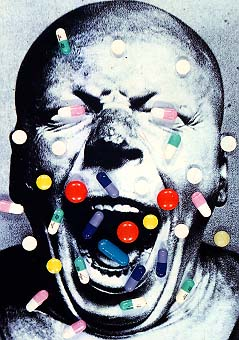
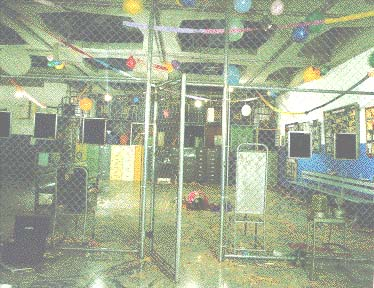
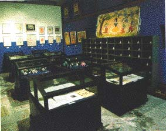
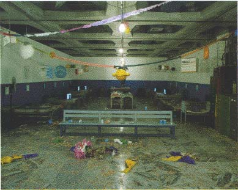

|
Theodore Adorno pointed out as non-gratuitous the phonetic similarities between the words museum and mausoleum, thus unveiling the necrologic connotations of the paradigmatic institution devoted to the preservation of cultural heritage.
Due to the fact that both of my parents are psychiatrists, I find that the psychiatric hospital is the specular image that best suits the museum. Since my childhood I have regularly visited these places, which bear more than one architectural resemblance to the museum: their impeccable white rooms, neutral lighting, the proliferation of archives (dead or alive), and silent hallways through which visitors aimlessly wander. Both spaces make up a symbolic representation of authority, order, and discipline.
Both museums and psychiatric clinics are grounded on taxonomies that establish a dichotomy of the normal and the pathological. The processes of selection and marginalization constitute their main modus operandi, be it employed within the framework of museology or the study of human behavior. The therapeutic dogma that is common to both disciplines is behind the fact that both doctors and curators define their practice: to curate the body, artistically or physiologically.
In spite of the diverse changes that the Enlightenment project of the museum has undergone since its creation (including the avatars of the avant-garde and their immediate canonization during the first half of the twentieth century), it (the museum) continues to debate itself between irreconcilable precepts: the obligation of preserving tradition through its relics and artistic residue, along with the necessity if legitimizing those manifestations which adequate themselves to the canons of high culture. An example of this situation is the postcolonial polemic around the exclusion of the other in the context of an historical reading.
My installation, The Cure of Folly, at the Museo de Bellas Artes de Caracas, operates from the cracks produced by this dissemination. By moving that marginal space, the madhouse, to the Temple of Reason, which is the museum, I am ironically employing contextualization strategies that are characteristic of the latter: selection, archaeological outlook, collection and simulation. The purpose of this appropriation is to deconstruct the relations between the object and its visual display.
The objects chosen for my installation were drawn from the Psychiatric Hospital of Barbula: beds used by the patients in the wards, stones collected from the hospital grounds, medical histories, medication, an electroshock device, as well as piñatas and paintings made by the patients in the occupational therapy workshops. These are accompanied by the concepts of originality and uniqueness, which are essential to museum ideology.
Max Bense defined the aesthetic mode as a condition that manifests less in things than in their relationships; it is in these that my work finds its battleground.



 |